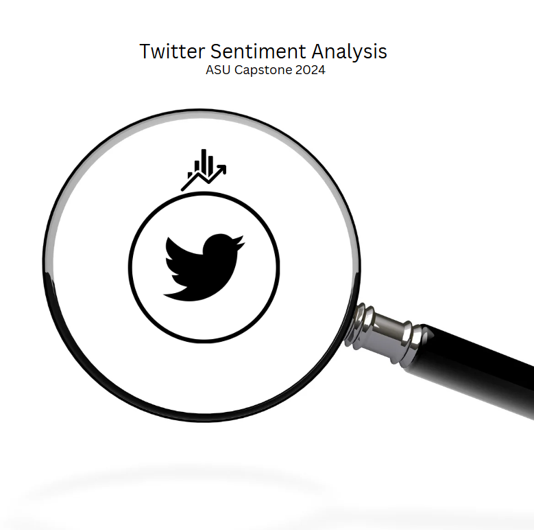
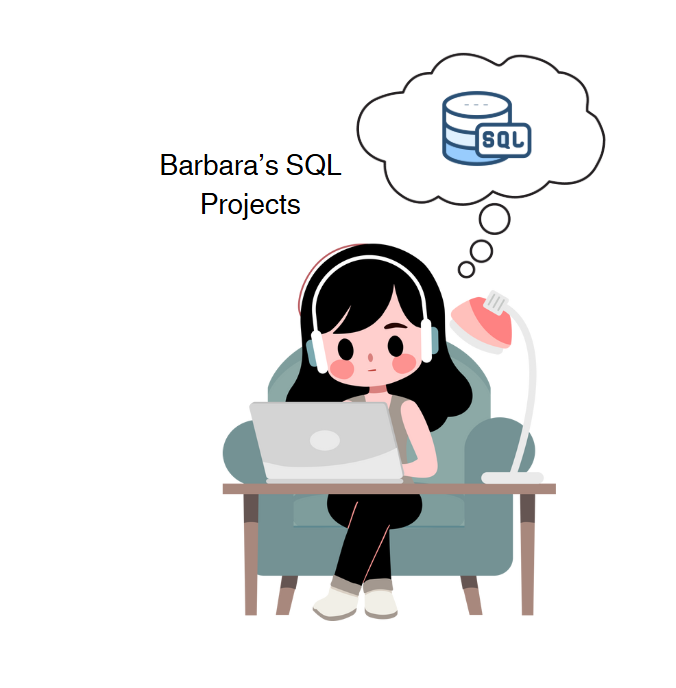
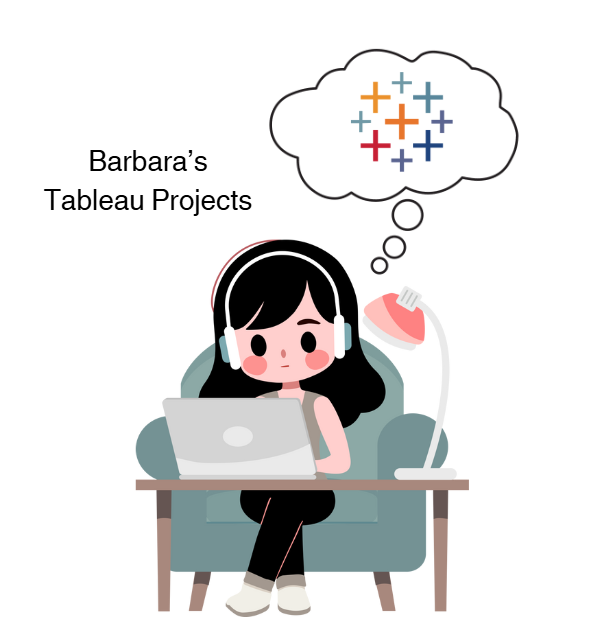
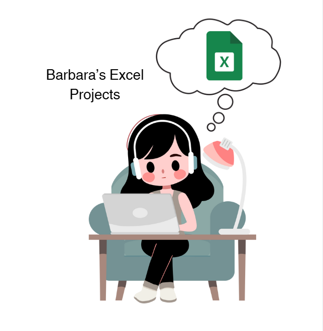
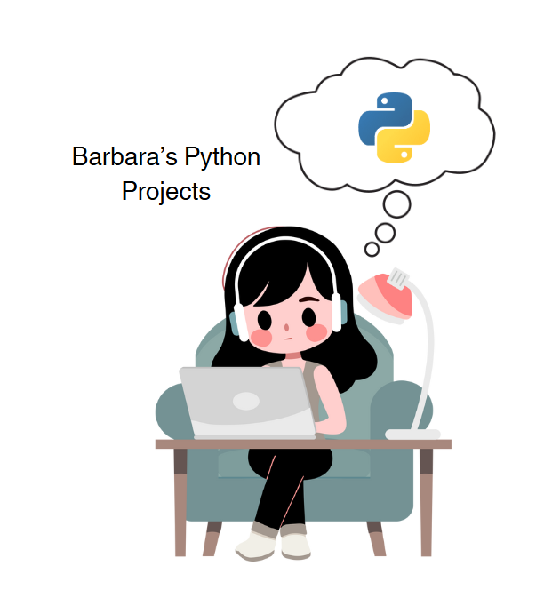
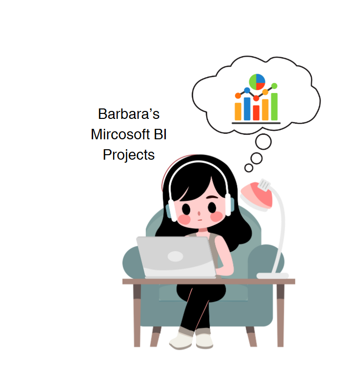

This project analyzes Twitter data during the 2020 U.S. Presidential Election, exploring the sentiments expressed by users in response to key political events, candidates, and social issues. By using natural language processing (NLP) techniques, we classified tweets into positive, negative, and neutral sentiments, providing insights into public opinion and political discourse. The analysis highlights trends, emotions, and shifts in public sentiment over time, offering a deeper understanding of how social media reflects and influences political engagement.


This repository showcases some of the most interesting SQL transformations I’ve worked on.

This page contains all my Tableau dashboards, showcasing my data visualizations and insights.

This repository features a selection of my Excel projects, showcasing my skills in data analysis, automation, and reporting. Using advanced Excel formulas and functions, these projects demonstrate my ability to organize, analyze, and visualize data efficiently. Each project reflects my hands-on experience in leveraging Excel’s powerful tools to transform raw data into actionable insights.

This repository contains a collection of my Python projects, showcasing my growth in programming, data analysis, and automation. From AI-driven prompt engineering to practical scripts like my Tableau Workbook Documentation Script, these projects reflect my continuous learning and hands-on experience in Python.

This repository contains a collection of my Mircosoft BI projects. I am currently working on Projects